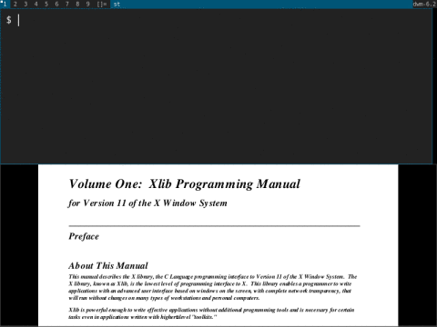
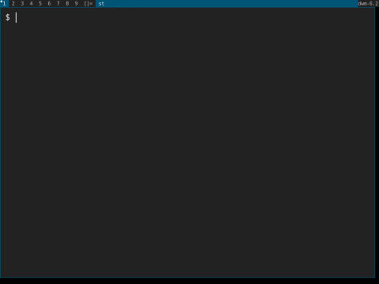

Dynamic, Command-Line Driven Window Swallowing for dwm
This patch introduces "dynamic" window swallowing to dwm. In contrast to the
mechanisms of the existing ("static") swallow
patch, dynamic window swallowing is
run-time configurable and fully scriptable via dwmswallow, the command-line
tool included with this patch.
Download
- dwm-dynamicswallow-20210221-61bb8b2.diff
- dwm-dynamicswallow-6.4.diff
- dwm-dynamicswallow-20240320-061e9fe.diff
1. Usage
Window swallowing is concerned with two scenarios: an existing window may either swallow another existing window, or it may be registered to swallow a future window.
1.1 Swallowing Future Windows
Any window managed by dwm may be registered to swallow the next upcoming window
whose attributes match the class name, instance name and window title filters
using the command-line tool dwmswallow. Quoting from dwmswallow -h:
dwmswallow SWALLOWER [-c CLASS] [-i INSTANCE] [-t TITLE]
Register window SWALLOWER to swallow the next future window whose attributes
match the CLASS name, INSTANCE name and window TITLE filters using basic
string-matching. An omitted filter will match anything.
The next window whose filters match will be swallowed by SWALLOWER, taking its
place. See the following example in which a terminal launches the surf
browser and swallows its window, creating the impression of browsing the web
"inside" the terminal. Upon closing the browser the terminal reappears. Note
the symbol in the status bar next to the layout symbol while the swallow is
active.

This example uses the WINDOWID environment variable to retrieve the terminal's
window id. Some terminals such as st or kitty export the variable, while
others such as gnome-terminal don't.
Note that swallowing is not at all restricted to terminals. Any two windows managed by dwm may be involved. Also, window swallowing is agnostic towards layouts, respects your usage of size hints and can be nested to arbitrary depths.
1.2 Swallowing Existing Windows
Swallowing of existing windows may be performed either from the command-line
(see dwmswallow -h) or using drag-and-drop via pointer (mod+shift+button1
by default).
See the following example in which a terminal is used to launch an application whose stdout is considered important during its startup sequence. Once the startup finishes without errors the stdout is of no interest anymore and the terminal window is made to swallow the application window by drag-and-dropping the latter onto the former.

Afterwards, the terminal can be remapped at any time by stopping the swallow using a hotkey (mod+u by default), which is not shown in the example.
1.3 Shell Integration
When working in a terminal a shell alias can be used to express whether
a graphical application shall open in a separate window or "inside" the
terminal. Given alias s='dwmswallow $WINDOWID;' the command s myguiprog
will run the application and swallow its window. Note that this requires the
terminal to export the WINDOWID environment variable.
Alternatively, a shell hotkey may be configured to preface the execution of
a command with dwmswallow $WINDOWID. For example, the following zsh
configuration will cause an application to be swallowed by the terminal when
its command is submitted by pressing CTRL-x + Enter as opposed to pressing
only Enter.
# add to .zshrc
bindkey '^X^m' accept-line-swallow
zle -N accept-line-swallow acceptandswallow
acceptandswallow() {
dwmswallow $WINDOWID
zle accept-line
}
2. Patching Instructions
Unless your fork of dwm is only slighly modified the adaptions to the patch listed here may be necessary or appropriate to better fit in with your existing build.
2.1 Patch-Specific Geometry Parameters
When swallowing a window the swallowee copies the swallower's geometry parameters to reposition itself to where the swallower used to be, creating the impression of one window incorporating another. There exist patches which add client-specific parameters that can modify a window's size or behavior. When applying the dynamicswallow patch these parameters must be configured manually in two places:
- Inside
swal(): during the swallowing of a window the swallowee shall inherit a copy of the swallower's values of these parameters. - Inside
swalstop(): when swallowing is stopped the swallower is remapped and the parameters' defaults for its window have to be chosen.
As a representative example consider the
cfacts patch which allows to
configure the relative sizes of windows in tiling mode using the
client-specific parameter cfact of type float. The two changes necessary to
accommodate this parameter are:
Inside
swal():cfactshall be copied from the swallower to the swallowee./* Configure geometry params obtained from patches (e.g. cfacts) here. */ swee->cfact = swer->cfact;Inside
swalstop(): the swallower'scfactshall be set to a sensible default./* Configure geometry params obtained from patches (e.g. cfacts) here. */ swer->cfact = 1.0;
The specific places of where to configure the parameters are marked with comments included in the patch.
2.2 Inter-Process Communication
In order for dwmswallow to communicate with dwm some means of inter-process
communication is required which dwm does not provide by default. To this end,
this patch includes an adaption of the
fakesignal patch which allows
sending commands to dwm by concatenating the command and its parameters into
a specifically formatted string and making it the name of the root window.
The fakesignal patch is lightweight, non-intrusive, easy to use and easy to extend to other commands. If your build does not include any IPC mechanisms there's no reason to not use fakesignal as a starting point. Its only downside is that the communication is unidirectional: one may send commands to dwm but dwm cannot send a reply in return.
If your build of dwm does contain an IPC mechanism you may, of course, use your existing communication pathways. While there's nothing wrong with using fakesignal to try out the patch you will eventually want to seemlessly integrate everything into your existing build. To achieve this you'll have to
- relay the execution of
dwmswallow SWALLOWER SWALLOWEEto a call toswal(). - relay the execution of
dwmswallow -c CLASS -i INSTANCE -t TITLEto a call toswalreg(). - relay the execution of
dwmswallow -sto a call toswalstop(). - relay the execution of
dwmswallow -dto a call toswalunreg().
using your IPC mechanism of choice.
3. Assorted Notes and Implementation Details
Consult this section if you're interested in changing the default behavior or if you're curious about the internals of the patch. The content herein is presented in no particular order.
3.1 Swallow Indicator in Status Bar
If the currently selected window on a monitor is being swallowed a
tongue-symbol 👅 (U+1F445) is drawn on the status bar next to the layout
symbol. If this is undesired remove the relevant commented section from
drawbar() or change the symbol in your config.h.
3.2 Retroactive Swallowing
When registering the swallow of a future window using the window title as
filter the swallowing may fail for some applications if retroactive swallowing
is disabled (set by swalretroactive). This is due to the fact these
applications create their window using a default window title and only update
it later to the proper, usage-specific value. When dwm checks whether any
registed swallows match the window's title it finds that none do due to the
usage of the default window title when the window is mapped.
If retroactive swallowing is enabled each time a window changes its title dwm checks whether a registered swallow instance matches the window and executes it accordingly. If you find yourself wanting to filter by window title keep retroactive swallowing enabled. While things are small, as they usually are, the runtime costs are completely negligible.
An example of this is the PDF viewer zathura. Zathura's window title reflects the currently viewed file and may be used to register swallows of PDF previews filtered by filename. However, zathura's startup sequence exhibits the above behavior and the window title is set to reflect the filename only after a default window title has been used.
# This requires retroactive swallowing
dwmswallow $WINDOWID -c Zathura -t ~/books/xlib.pdf
zathura ~/books/xlib.pdf
3.3 Decaying of Registered Swallows
It occasionally happens that swallows are registered but not consumed, either
due to misspelling the filters, causing them to never match or because the
user's intention has changed along the way. If swaldecay is set to a value
greater than zero any registered swallow instance is deleted if it hasn't been
consumed after so many new windows are mapped, i.e. after swaldecay
unsuccessful matches.
3.4 wintoclient() vs wintoclient2()
Regular clients, swallowees and swallowers each require different handling by dwm with respect to X request and notify events (map, unmap, delete, configure, ...) for their respective windows.
In order to distinguish between the three classes of clients during runtime the
function wintoclient2() extends the functionality of the built-in
wintoclient(). In addition to retrieving the address of a window's client
from the window ID, it also returns the client type. It entails a change in
signature which is responsible for the majority of changes made by the patch
except for self-contained function definitions.
Author
- Stanislaw Hüll (hdstansen@gmail.com)